INTERMEZZO 2: QUOTE, UNQUOTE
Lists play an important role in our book as well as in Racket, the basis of our teaching languages. For the design of programs, it is critical to understand how lists are constructed from first principles; it informs the creation of our programs. Routine work with lists calls for a compact notation, however, like the list function introduced in chapter 11.1.
Be sure to set your language level to BSL+ or up.
Since the late 1950s, Lisp-style languages have come with an even more powerful pair of list-creation tools: quotation and anti-quotation. Many programming languages support them now, and the PHP web page design language injected the idea into the commercial world.
This intermezzo gives you a taste of this quotation mechanism. It also introduces symbols, a form of data that is intimately tied to quotation. While this introduction is informal and uses simplistic examples, the rest of the book illustrates the power of the idea with near-realistic variants. Come back to this intermezzo if any of these examples cause you trouble.
Quote
Quotation is a short-hand mechanism for writing down a large list easily. Roughly speaking, a list constructed with the list function can be constructed even more concisely by quoting lists. Conversely, a quoted list abbreviates a construction with list.
Technically, quote is a keyword for a compound sentence in the spirit of intermezzo 1 and it is used like this: (quote (1 2 3)). DrRacket translates this expression to (list 1 2 3). At this point, you may wonder why we call quote an abbreviation because the quoted expression looks more complicated than its translation. The key is that ' is a short-hand for quote. Here are some short examples, then:
> '(1 2 3)
(list 1 2 3)
> '("a" "b" "c")
(list "a" "b" "c")
> '(#true "hello world" 42)
(list #true "hello world" 42)
As you can see, the use of ' creates the promised lists. In case you forgot what (list 1 2 3) means, reread chapter 11.1; it explains that this list is short for (cons 1 (cons 2 (cons 3 '()))).
So far quote looks like a small improvement over list, but look:
> '(("a" 1)
("b" 2)
("d" 4))
(list (list "a" 1) (list "b" 2) (list "d" 4))
With ' we can construct lists as well as nested lists.
To understand how quote works, imagine it as a function that traverses the shape it is given. When ' encounters a plain piece of data—a number, a string, a Boolean, or an image—it disappears. When it sits in front of an open parenthesis, (, it inserts list to the right of the parenthesis and puts ' on all the items between ( and the closing ). For example,
'(1 2 3) is short for (list '1 '2 '3)
As you already know, ' disappears from numbers so the rest is easy. Here is an example that creates nested lists:
'(("a" 1) 3) is short for (list '("a" 1) '3)
To continue this example, we expand the abbreviation in the first position:
(list '("a" 1) '3) is short for (list (list '"a" '1) 3)
We leave it to you to wrap up this example.
Exercise 231. Eliminate quote in favor of list from these expressions:
• '(1 "a" 2 #false 3 "c")
• '()
• and this table-like shape:
'(("alan" 1000)
("barb" 2000)
("carl" 1500))
Now eliminate list in favor of cons where needed. 
Quasiquote and Unquote
The preceding section should convince you of the advantages of ' and quote. You may even wonder why the book introduces quote only now and didn’t do so right from the start. It seems to greatly facilitate the formulation of test cases that involve lists as well as for keeping track of large collections of data. But all good things come with surprises, and that includes quote.
When it comes to program design, it is misleading for beginners to think of lists as quoted or even list-constructed values. The construction of lists with cons is far more illuminating for the step-wise creation of programs than short-hands such as quote, which hide the underlying construction. So don’t forget to think of cons whenever you are stuck during the design of a list-processing function.
Let’s move on, then, to the actual surprises hidden behind quote. Suppose your definitions area contains one constant definition:
(define x 42)
Imagine running this program and experimenting with
'(40 41 x 43 44)
in the interactions area. What result do you expect? Stop! Try to apply the above rules of ' for a moment.
Here is the experiment
> '(40 41 x 43 44)
(list 40 41 'x 43 44)
At this point it is important to remember that DrRacket displays values. Everything on the list is a value, including 'x. It is a value you have never seen before, namely, a Symbol. For our purposes, a symbol looks like a variable name except that it starts with ' and that a symbol is a value. Variables only stand for values; they are not values in and of themselves. Symbols play a role similar to those of strings; they are a great way to represent symbolic information as data. Part IV illustrates how; for now, we just accept symbols as yet another form of data.
To drive home the idea of symbols, consider a second example:
'(1 (+ 1 1) 3)
You might expect that this expression constructs (list 1 2 3). If you use the rules for expanding ', however, you discover that
'(1 (+ 1 1) 3) is short for (list '1 '(+ 1 1) '3)
And the ' on the second item in this list does not disappear. Instead, it abbreviates the construction of another list so that the entire example comes out as
(list 1 (list '+ 1 1) 3)
What this means is that '+ is a symbol just like 'x. Just as the latter is unrelated to the variable x, the former has no immediate relationship to the function + that comes with BSL+. Then again, you should be able to imagine that '+ could serve as an elegant data representation of the function + just as '(+ 1 1) could serve as a data representation of (+ 1 1). Part IV picks up this idea.
In some cases, you do not want to create a nested list. You actually want a true expression in a quoted list and you want to evaluate the expression during the construction of the list. For such cases, you want to use quasiquote, which, like quote, is just a keyword for a compound sentence: (quasiquote (1 2 3)). And, like quote, quasiquote comes with a short-hand, namely the ` character, which is the “other” single-quote key on your keyboard.
At first glance, ` acts just like ' in that it constructs lists:
> `(1 2 3)
(list 1 2 3)
> `("a" "b" "c")
(list "a" "b" "c")
> `(#true "hello world" 42)
(list #true "hello world" 42)
The best part about ` is that you can also use it to unquote, that is, you can demand an escape back to the programming language proper inside of a quasiquoted list. Let’s illustrate the idea with the above examples:
> `(40 41 ,x 43 44)
(list 40 41 42 43 44)
> `(1 ,(+ 1 1) 3)
(list 1 2 3)
As above, the first interaction assumes a definitions area that contains (define x 42). The best way to understand this syntax is to see it with actual keywords instead of ` and , short-hands:
(quasiquote (40 41 (unquote x) 43 44))
(quasiquote (1 (unquote (+ 1 1)) 3))
The rules for expanding a quasiquoted and an unquoted shape are those of quote supplemented with one rule. When ` appears in front of a parenthesis, it is distributed over all parts between it and the matching closing parenthesis. When it appears next to a basic piece of data, it disappears. When it is in front of some variable name, you get a symbol. And the new rule is that when ` is immediately followed by unquote, both characters disappear:
`(1 ,(+ 1 1) 3) is short for (list `1 `,(+ 1 1) `3)
and
(list `1 `,(+ 1 1) `3) is short for (list 1 (+ 1 1) 3)
And this is how you get (list 1 2 3) as seen above.
From here it is a short step to the production of web pages. Yes, you read correctly—web pages! In principle, web pages are coded in the HTML and CSS programming languages. But nobody writes down HTML programs directly; instead people design programs that produce web pages. Not surprisingly, you can write such functions in BSL+, too, and there is a simplistic example in figure 83. As you can immediately see, this function consumes two strings and produces a deeply nested list—a data representation of a web page.
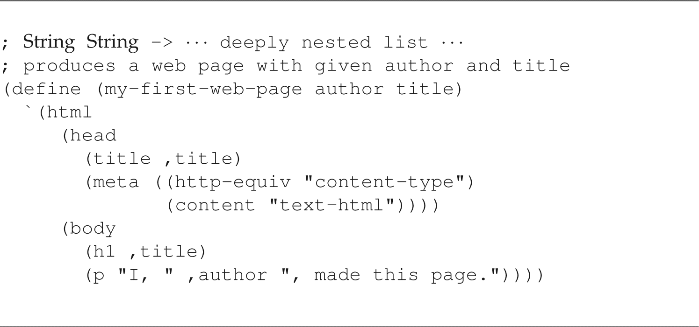
Figure 83: A simplistic HTML generator
A second look also shows that the title parameter shows up twice in the function body: once nested in a nested list labeled with 'head and once nested in the nested list labeled with 'body. The other parameter shows up only once. We consider the nested list a page template, and the parameters are holes in the template, to be filled by useful values. As you can imagine, this template-driven style of creating web pages is most useful when you wish to create many similar pages for a site.
To understand how the function works, we experiment in DrRacket’s interactions area. Given your knowledge of quasiquote and unquote, you should be able to predict what the result of
(my-first-web-page "Matthias" "Hello World")
is. Then again, DrRacket is so fast that it is better to show you the result: see the left column in figure 84. The right column of the table contains the equivalent code in HTML. If you were to open this web page in a browser you would see something like this:
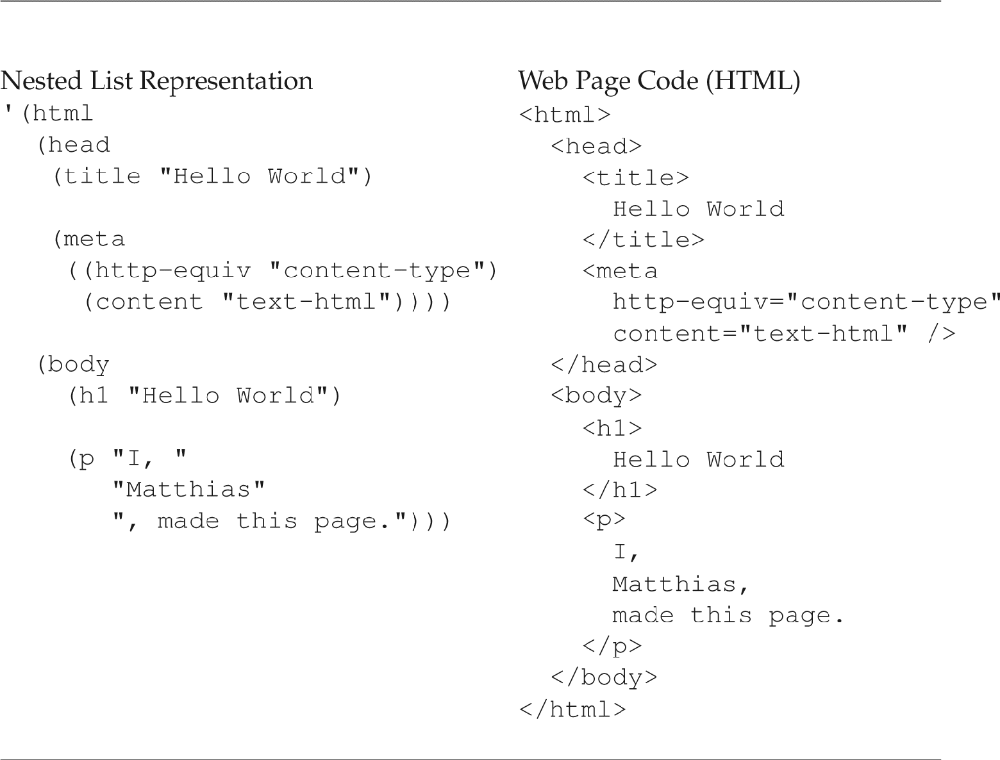
Figure 84: A data representation based on nested lists
Note that "Hello World" shows up twice again: once in the title bar of the web browser—which is due to the <title> specification—and once in the text of the web page.
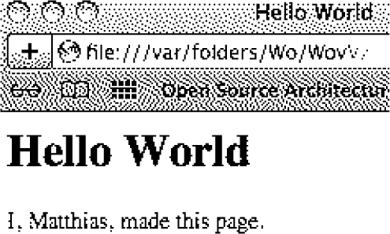
You can use show-in-browser from the web-io.rkt library to display the result in a web browser.
If this were 1993, you could now sell the above function as a Dot Com company that generates people’s first web page with a simple function call. Alas, in this day and age, it is only an exercise.
Exercise 232. Eliminate quasiquote and unquote from the following expressions so that they are written with list instead:
• `(1 "a" 2 #false 3 "c")
• this table-like shape:
`(("alan" ,(* 2 500))
("barb" 2000)
(,(string-append "carl" " , the great") 1500)
("dawn" 2300))
• and this second web page:
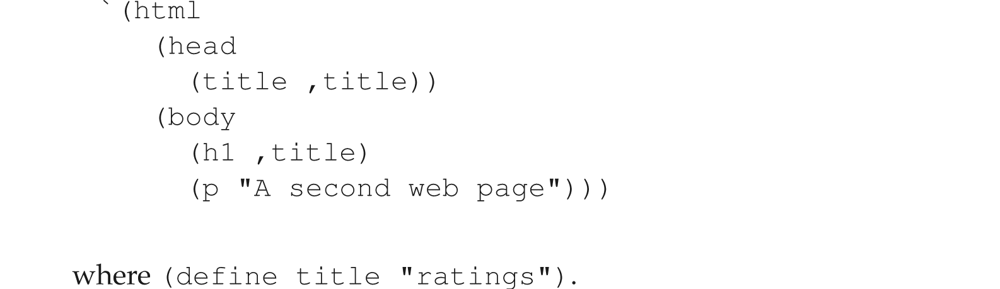
Also write down the nested lists that the expressions produce.
Unquote Splice
When quasiquote meets unquote during the expansion of short-hands, the two annihilate each other:
Thus, whatever make-row produces becomes the second item of the list. In particular, if make-row produces a list, this list becomes the second item of a list. If make-row translates the given list of numbers into a list of strings, then the result is
(list 'tr (list "3" "4" "5"))
In some cases, however, we may want to splice such a nested list into the outer one, so that for our running example we would get
(list 'tr "3" "4" "5")
One way to solve this small problem is to fall back on cons. That is, to mix cons with quote, quasiquote, and unquote. After all, all of these characters are just short-hands for consed lists. Here is what is needed to get the desired result in our example:
(cons 'tr (make-row '(3 4 5)))
Convince yourself that the result is (list 'tr "3" "4" "5").
Since this situation occurs quite often in practice, BSL+ supports one more short-hand mechanism for list creation: ,@, also known as unquote-splicing in keyword form. With this form, it is straightforward to splice a nested list into a surrounding list. For example,
`(tr ,@(make-row '(3 4 5)))
translates into
(cons 'tr (make-row '(3 4 5)))
which is precisely what we need for our example.
Now consider the problem of creating an HTML table in our nested-list representation. Here is a table of two rows with four cells each:
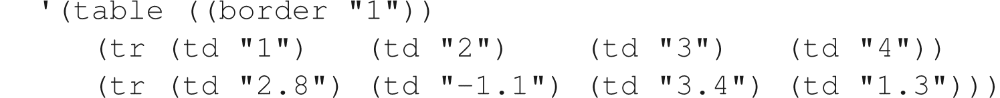
The first nested lists tells HTML to draw a thin border around each cell in the table; the other two nested lists represent a row each.
In practice, you want to create such tables with arbitrarily wide rows and arbitrarily many rows. For now, we just deal with the first problem, which requires a function that translates lists of numbers into HTML rows:
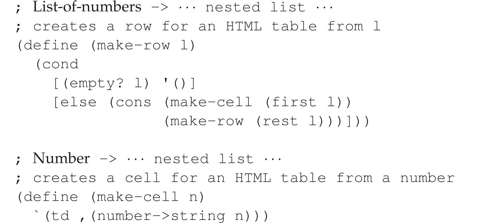
Instead of adding examples, we explore the behavior of these functions in DrRacket’s interactions area:
> (make-cell 2)
(list 'td "2")
> (make-row '(1 2))
(list (list 'td "1") (list 'td "2"))
These interactions show the creation of lists that represent a cell and a row.
To turn such row lists into actual rows of an HTML table representation, we need to splice them into a list that starts with 'tr:
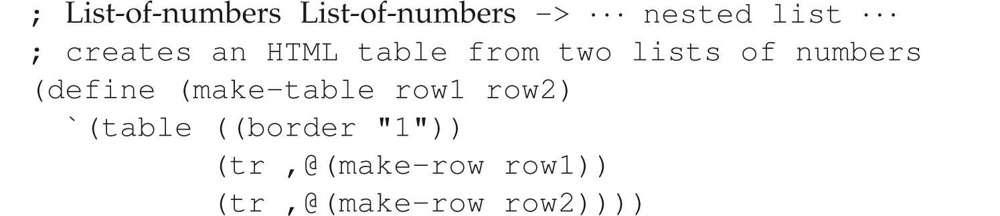
This function consumes two lists of numbers and creates an HTML table representation. With make-row, it translates the lists into lists of cell representations. With ,@ these lists are spliced into the table template:
> (make-table '(1 2 3 4 5) '(3.5 2.8 -1.1 3.4 1.3))
(list 'table (list (list 'border "1")) '.…)
This application of make-table suggests another reason why people write programs to create web pages rather than make them by hand.
The dots are not part of the output.
Exercise 233. Develop alternatives to the following expressions that use only list and produce the same values:
• `(0,@'(1 2 3) 4)
• this table-like shape:
• and this third web page:
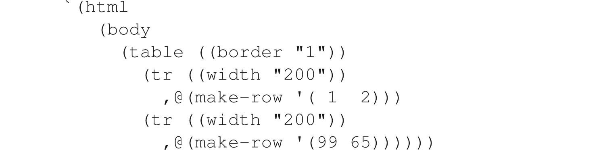
where make-row is the function from above.
Use check-expect to check your work.
Exercise 234. Create the function make-ranking, which consumes a list of ranked song titles and produces a list representation of an HTML table. Consider this example:
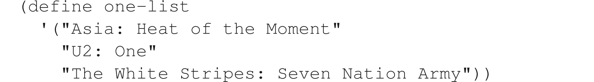
If you apply make-ranking to one-list and display the resulting web page in a browser, you see something like the screen shot in figure 85.
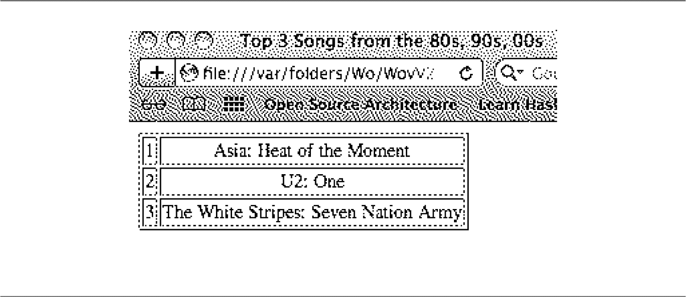
Figure 85: A web page generated with BSL+
Hint Although you could design a function that determines the rankings from a list of strings, we wish you to focus on the creation of tables instead. Thus we supply the following functions:
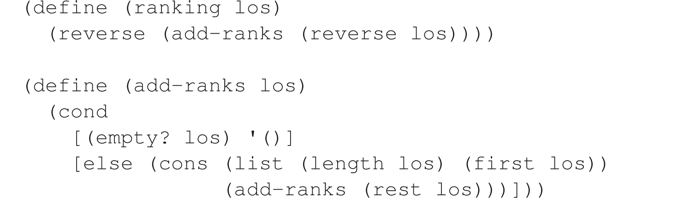
Before you use these functions, equip them with signatures and purpose statements. Then explore their workings with interactions in DrRacket. Part VI expands the design recipe with a way to create simpler functions for computing rankings than ranking and add-ranks.